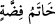
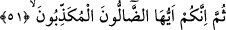
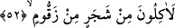
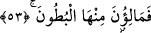
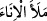
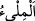

(hâtemu fidda) isim tamlamasında olduğu gibi min mânâsınadır. Yâni
belirlenmiş o vakit, bilinen gündendir. Mikat, bir şeyin bitimi veya başlangıcı ile
sınırlanan zamandır. Kıyâmet günü ise gelmesiyle dünya hayatının son bulduğu vakittir.
Böyle olunca mîkât, sınırlanmış zamandır. Bâzen bu kelime yer anlamında istiâre olarak
kullanılır. Nitekim Mekke-i Mükerreme’ye ihramla girmek isteyen kimsenin, ihrama
girmeden geçmesi câiz olmayan yerlere “ihram mîkâtları” denmesi buna örnektir.
51. Sonra siz ey sapıklar, yalancılar!
“Sonra siz” ifâdesindeki hitap Mekke halkına ve benzerlerinedir. Bu âyet-i kerîme de
atıf harfi olan sümme ile 49. âyet-i kerîmeye atfedilmiştir. “Ey” hak ve hidayet yolundan
sapanlar, öldükten sonra dirilmeyi “yalanlayanlar!”
52. Elbette bir ağaçtan, zakkum ağacından yiyeceksiniz.
“Elbette” ölümden sonra dirildikten, mahşerde toplandıktan ve cehenneme girdikten
sonra “bir ağaçtan, zakkum ağacından yiyeceksiniz.” Âyet-i kerîmede geçen birinci
min harfi sınırın başlangıcını, ikinci min ise ağacın zakkum ağacı olduğunu açıklamak
içindir. Böyle olunca âyet-i kerîmenin açıklaması şöyle olur: Cehennemde yemeğe bir
ağaçtan başlayacaksınız. Bu ağaç, kokusu çok çirkin, dokunulduğunda yakıcı, görünüm
ve tadı çok kötü olan “ve Kur’an’da lânetlenen ağaç…” (el-İsra 17/60) diye
bildirilen ağaçtır.
Hakikat ehli olan âlimler demişlerdir ki: Sidretü’l-müntehâ ağacının dalları cennet
halkı için nimetlerle doludur. Bunun kökleri ise cehennem halkı için zakkumdur.
Dolayısıyla bu ağaç, lütuf ve kahrın, ilahi sıfâtlar olan Celal ve Cemal sıfatlarının
başlangıcıdır.
53. Karınlarınızı ondan dolduracaksınız.
“Karınlarınızı ondan,” o ağaçtan yiyerek “dolduracaksınız.” Araplar kabı doldurdu
anlamında
derler. __WORD__ (el-Mil’u) ağzına kadar dolduğunda kabın aldığı miktardır.